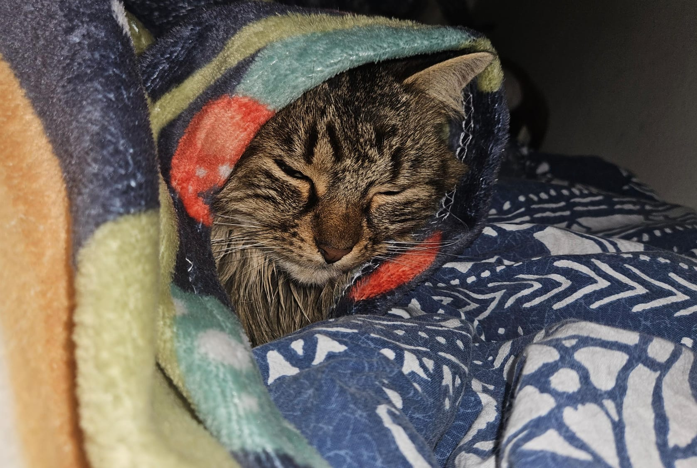
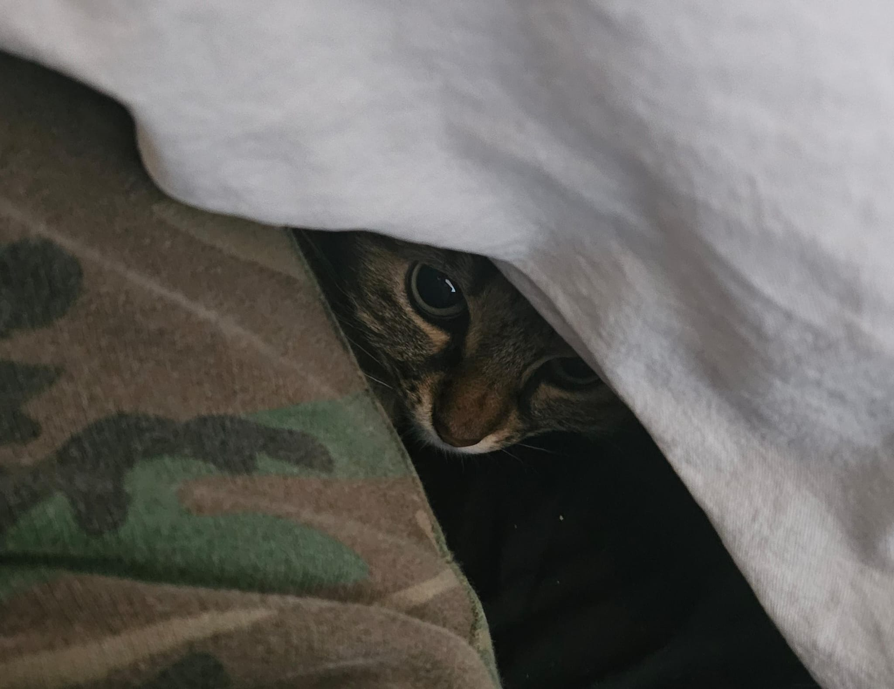
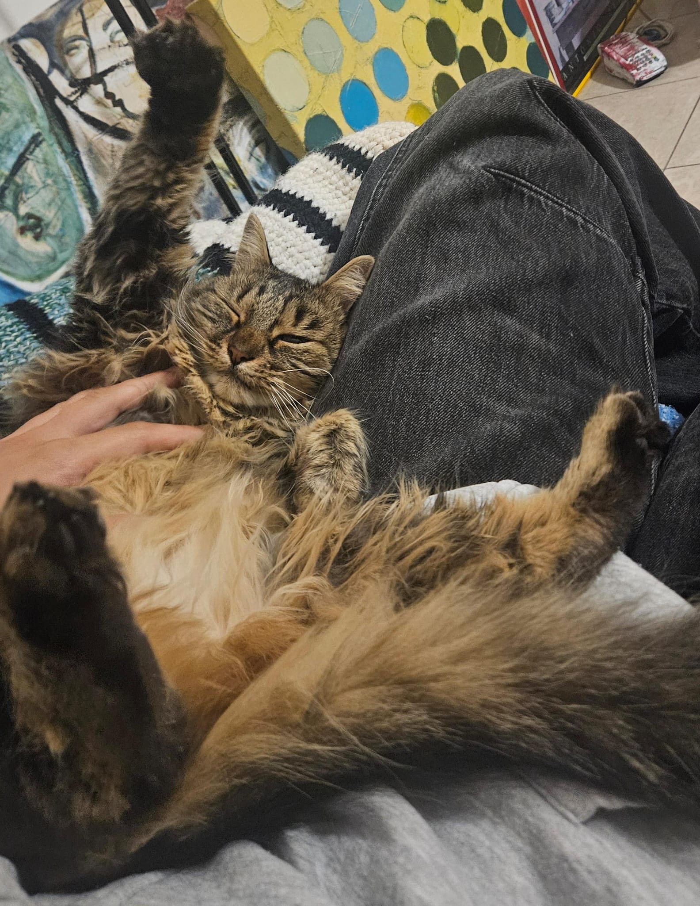
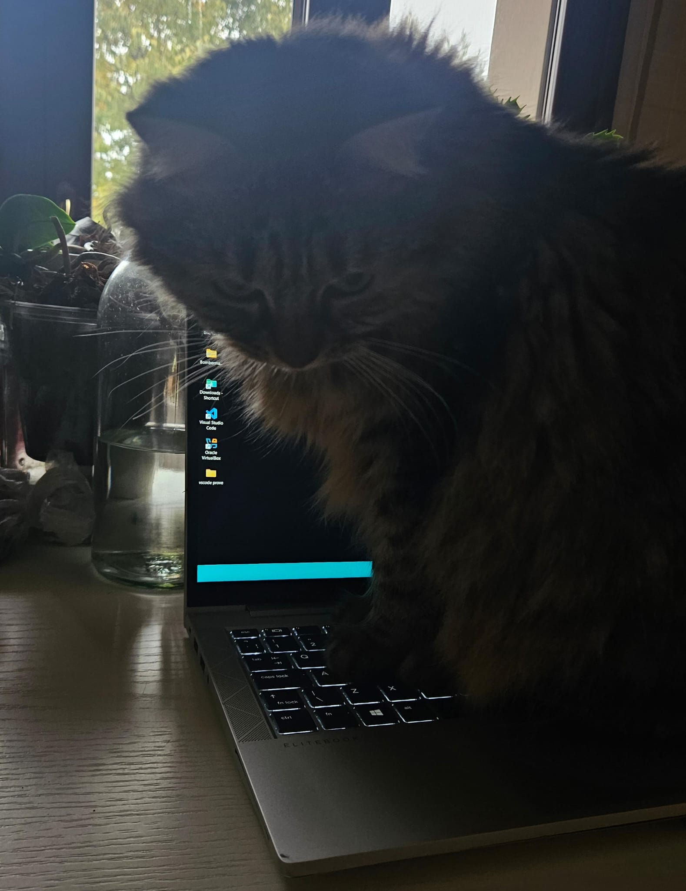
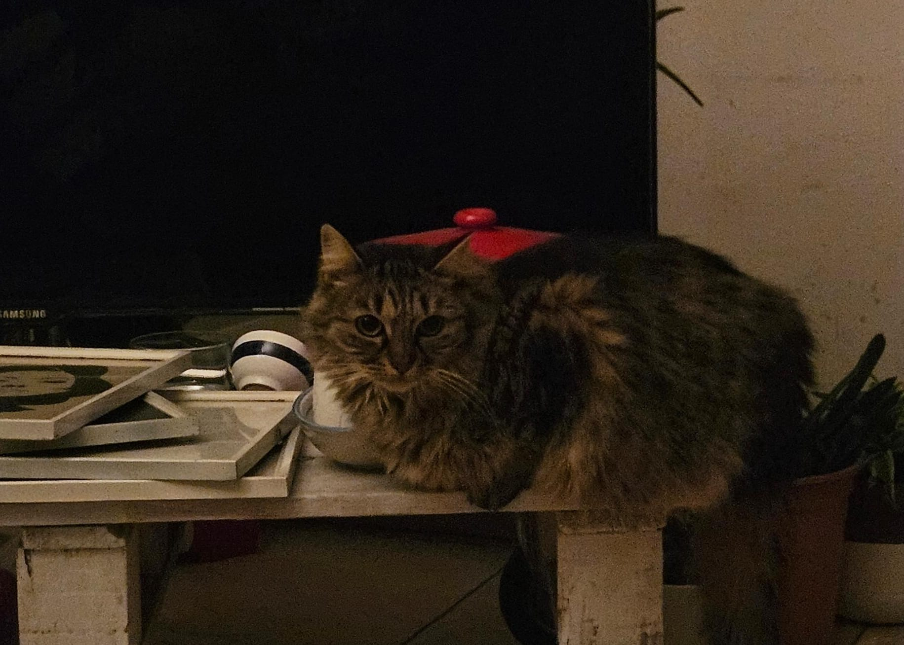

Chi e' la Cici?
Per mi non mi conpscesse (strano!) mi presento: sono la Cici.
Sono una bellissima gatta europea a pelo lungo di circa 4 anni e mezzo (nessuno sa quando sono nata... io non mi ricordo bene). Vengo dalla Puglia, ma quando ero piccola mi sono trasferita a Modena. La casa prevedeva gia' una servitu' di base, e me la sono dovuta far andare bene.
Amo mangiare, dormire, lavarmi, e saltare come una pazza quando faccio cadere le cose di proposito. Il mio gioco preferito e' fare le fusa ma poi schiaffeggiare a sorpresa chi mi sta coccolando, per tenerli sulle spine! Passo molto tempo sotto le coperte, ad osservare gli uccellini oppure a studiare quella strana scatola luminosa al di fuori del mio regno: si apre e si chiude facendo un gran rumore, ma mi fa troppa paura per avvicinarmici.
La mia galleria





Cibo CONAD - La mia Classifica
| Gusto | Voto | Commento |
|---|---|---|
| Tonno | 9 | amo il tonno, ma e' meglio quello riomare che rubo dal tavolo |
| Manzo | 8 | classico |
| Pollo | 6 | buono ma noioso |
| Selvaggina | 4 | solo se proprio non c'e' altro |
| Vitello | - | non mangio bambini!!! |
Menzione d'onore: provate i croccantini ripieni. Ci sono alle verdure, al formaggio e alla carne. Molto buoni ed ottimi per la dieta (ovviamente non che mi serva, dico per voi).